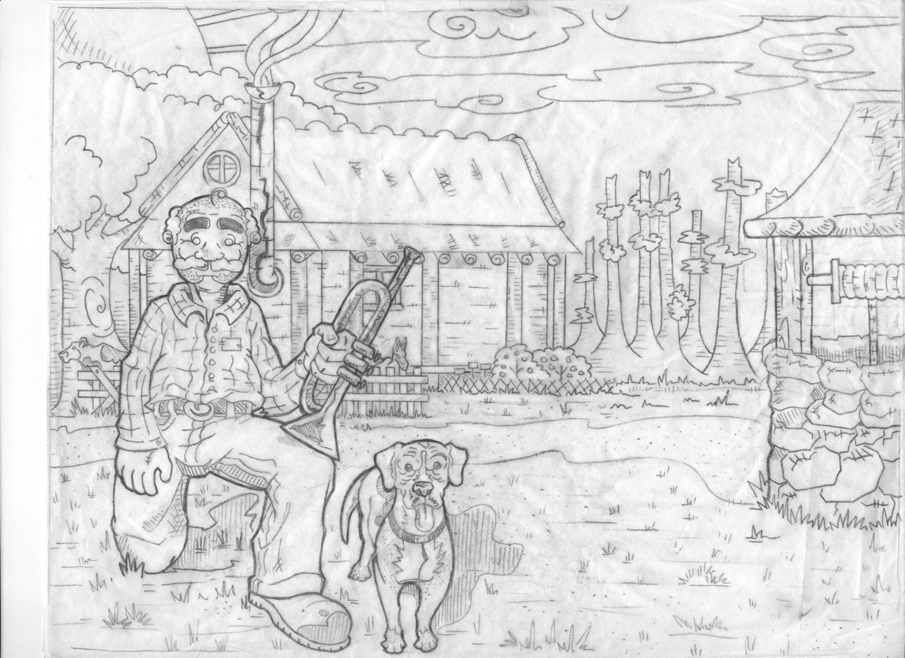
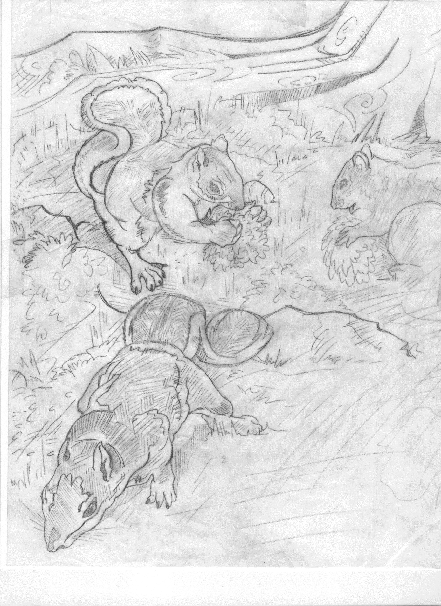
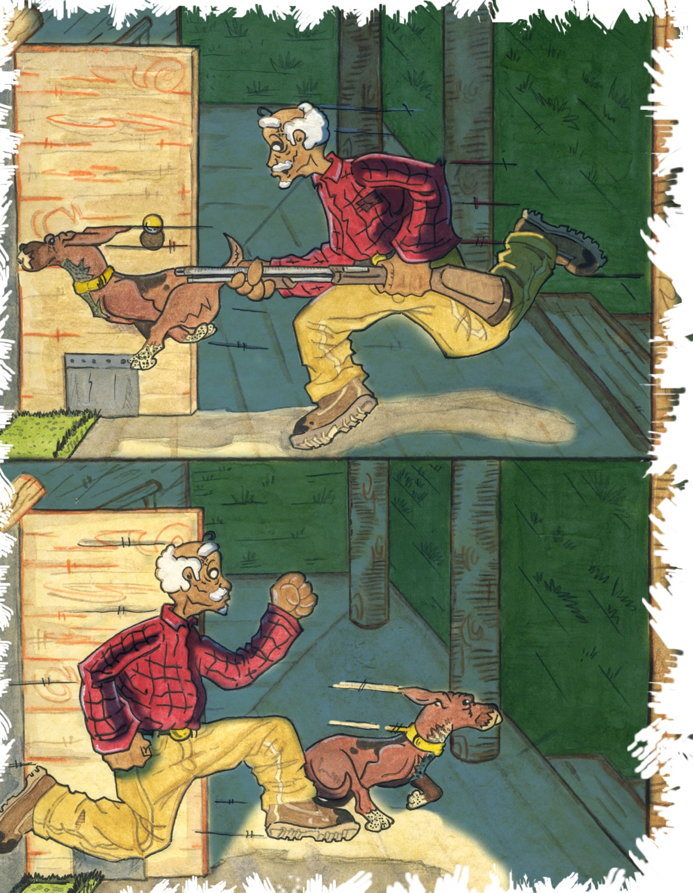

First Published Illustration Assignment
Albo Finds a Home
Created for author Dennis R. LaPoole, this project combined detailed pencil drawing, traditional watercolor and Photoshop enhancement.
From Sketch to Published Book




